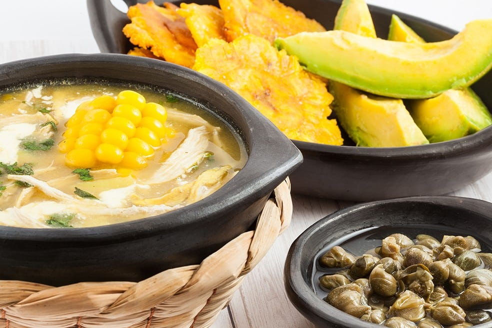

Ajiaco

What is Ajiaco?
Ajiaco is a delicious typical Colombian dish. It is essentially a potato soup with chicken, cream, capers, and avocado.
You can eat this dish with rice and a glass of your favorite juice.
Now, let's see how to prepare this dish.
Ingredients:
- Water
- 3 potatoes
- 2 large chicken breasts
- an onion, coarsely chopped
- 5 clove garlic
- 1 bunch fresh cilantro
- 2 avocados
- sour cream
- 2 tablespoons capers
Instructions
- Place the chicken in a glass or ceramic dish. Top with the onion, garlic, salt, and pepper.
- Cover and refrigerate for 8 to 24 hours.
- Add the chicken with the vegetables and brown each side, about 6 minutes.
- When the mixture boils, lower the heat to medium-low then cover and simmer. Cook until the chicken is tender, about 30 minutes.
- When cool enough to handle, remove the skin from the chicken and discard. Cut or tear the chicken breasts into bite-size strips and discard the bones.